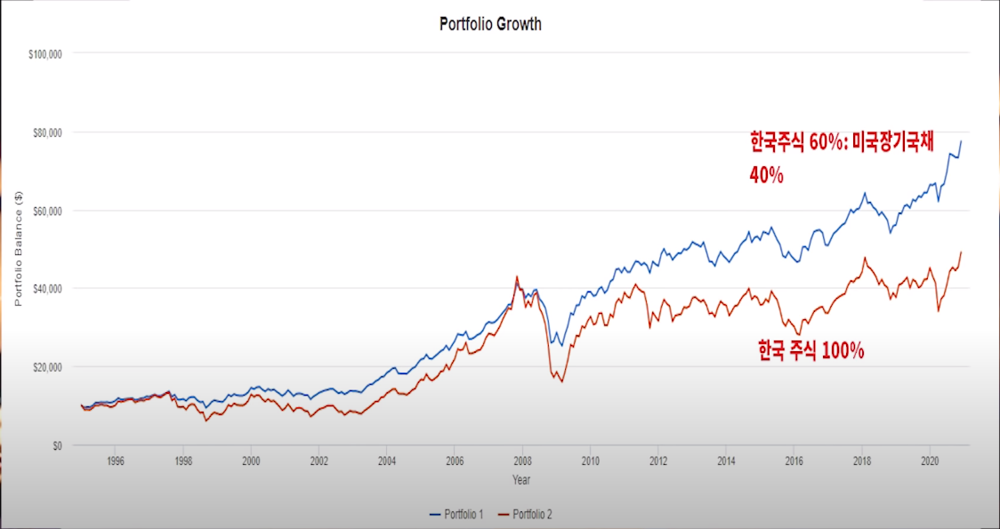
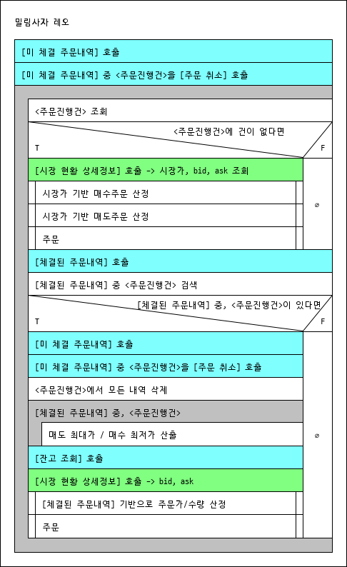

Korbit 트레이딩봇 - 밀림 사자 Leo
내가 잘 때도 너는 벌어라
Leo - Korbit 트레이딩봇
배경지식
리밸런싱
-
리밸런싱 사례 (https://youtu.be/2w5dXRReZJU?t=503) 


가상화폐 거래소 코빗
- 코빗 거래수수료
-
거래수수료 구분
- 코빗은 더이상 Taker/Maker 수수료를 구분하지 않는다. 신경 안 써도 됨
- Taker 주문 : 즉시 체결되는 주문
- 시장가로 주문
- 지정가 주문 시, 이미 오더북에 올라와있는 주문과 동일한 금액으로 주문
- 지정가 매수 주문 시, 체결 가능한 호가보다 높은 가격으로 주문
-
최고 매수호가<매수주문가→ 비싸게 사겠다고 하니까 즉시 체결
-
- 지정가 매도 주문 시, 체결 가능한 호가보다 낮은 가격으로 주문
-
최저 매도호가>매도주문가→ 싸게 팔겠다고 하니까 즉시 체결
-
-
Maker 주문 : 즉시 체결되지 않는 주문
- 지정가 매수 주문 시, 체결 가능한 호가보다 낮은 가격으로 주문
-
최고 매수호가>매수주문가→ 싸게 사겠다고 하는 무리 중 하나
-
- 지정가 매도 주문 시, 체결 가능한 호가보다 높은 가격으로 주문
-
최저 매도호가<매도주문가→ 비싸게 팔겠다고 하는 무리 중 하나
-
- 지정가 매수 주문 시, 체결 가능한 호가보다 낮은 가격으로 주문
용어
-
최근내주문체결가: 나의 주문 중 마지막으로 체결된 거래의 거래가 -
목표 밸런싱비율: “코인 평가금액 : 예수금잔고”의 목표 비율 -
거래트리거링가격변동포인트: 이 %포인트 만큼 체결가 변동이 일어나면 리밸런싱한다 - 제약조건
- tick_size 호가단위
- min_price 최소 주문가
- order_min_size 최소 주문량
- max_price 최대 주문가
- order_max_size 최대 주문량
- 수수료
- volume 해당 통화쌍의 30일간의 거래량(KRW)
- maker_fee 베이시스 포인트(BPS - 1/100 퍼센트 기준)로 표기된 maker 거래 수수료율
- taker_fee 베이시스 포인트(BPS - 1/100 퍼센트 기준)로 표기된 taker 거래 수수료율
로직

주문가/주문량 산출
파라미터/변수
-
입력
- 입력값
- $b$ 목표 밸런싱비율
- $t$ 거래트리거링가격변동포인트
-
체결된 주문내역
- $p_f$ 최근내주문체결가
-
잔고 조회
- $a_i$ 코인보유량
- $v_c$ 현금(예수금잔고)
- env
- constans (제약조건)
- $a_m$ 최소주문량
-
시장 현황 상세정보
- bid:
최고 매수호가현재 매수 주문 중 가장 높은 가격 - ask:
최저 매도호가현재 매도 주문 중 가장 낮은 가격
- bid:
- constans (제약조건)
- 입력값
-
중간값
- $v_e$ 거래직전 평가액
- $v_o$ 주문금액
-
리턴
- $p_o$ 주문가
- $a_o$ 주문량
로직
매수
목표밸런싱비율 $b$ 는 입력값으로 고정이다
여기서
따라서 주문량 $a_o$는
여기서 주문가 $p_o$는
만약 주문량 $a_o$이 최소주문량 $a_m$보다 작다면
주문량 $a_o$를 최소주문량 $a_m$으로 설정한다
이 때 주문가 $p_o$는
매도
목표밸런싱비율 $b$ 는 입력값으로 고정이다
여기서
따라서 주문량 $a_o$는
여기서 주문가 $p_o$는
만약 주문량 $a_o$이 최소주문량 $a_m$보다 작다면
주문량 $a_o$를 최소주문량 $a_m$으로 설정한다
이 때 주문가 $p_o$는
로깅
주문
- 주문ID (매수주문, 매도주문)
- 매도매수구분 (입력값)
- 주문가 (주문가/주문량 산출 로직 리턴값)
- 주문량 (주문가/주문량 산출 로직 리턴값)
- 산출베이스체결ID (체결된 주문내역)
- 주문가/주문량 산출 로직 입력값
- $b$ 목표 밸런싱비율 (입력값)
- $t$ 거래트리거링가격변동포인트 (입력값)
- $p_f$ 최근내주문체결가 (체결된 주문내역)
- $a_i$ 코인보유량 (잔고 조회)
- $v_c$ 현금(예수금잔고) (잔고 조회)
- bid:
최고 매수호가현재 매수 주문 중 가장 높은 가격 (시장 현황 상세정보) - ask:
최저 매도호가현재 매도 주문 중 가장 낮은 가격 (시장 현황 상세정보) - last: 최종 체결 가격 (시장 현황 상세정보)
체결
체결된 주문내역 확인 후 로깅
그냥 json 그대로 저장할까?
-
체결된 주문내역 리턴값
- 체결ID
- 매도매수구분
- 체결시각
- 수수료
- 통화: 매수 시 코인, 매도 시 krw
- 수량
- 주문ID
- 체결가
- 통화
- 수량
- 체결량
- 통화
- 수량
-
잔고 조회 리턴값
- 코인보유량
- 현금(예수금잔고)
Git
https://github.com/everlearningemployee/leo.git